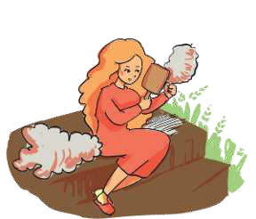
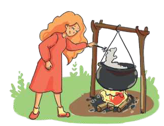
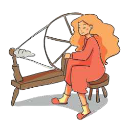
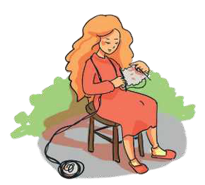
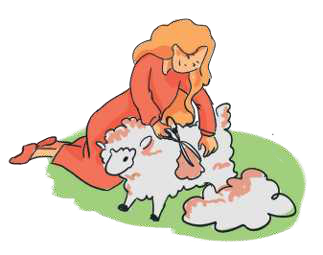

TEMATIKA 1: MATERIALET DHE PËRPUNIMI I TYRE3. Dita dhe lulja e veçantë
Puno në shtëpi
Ndihmë: si të punoj?
Lëvize secilën kartë me butonat “Lëviz lart” dhe “Lëviz poshtë”, derisa radha të jetë e saktë. Kur të mbarosh, shtyp butonin “Dërgo”.
1.
Teta Shpresa i premtoi Ditës se do t’i bëjë një triko prej leshi. Në figurë është paraqitur i gjithë procesi i punës së teta Shpresës.
Vendosi figurat sipas radhës së veprimeve, nga e para tek e fundit.

Kreh leshin.
Ngjyros leshin në kazan.
Tjerr leshin dhe bën fije.
Thur trikon.
Qeth delen.- Lan leshin.